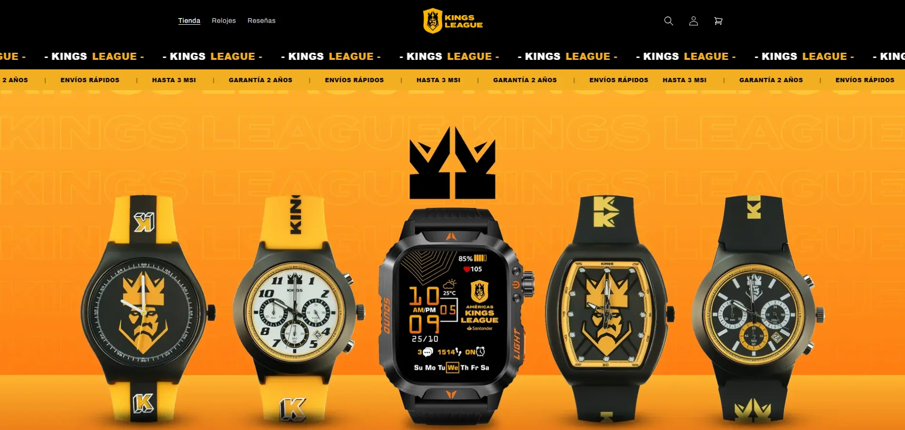
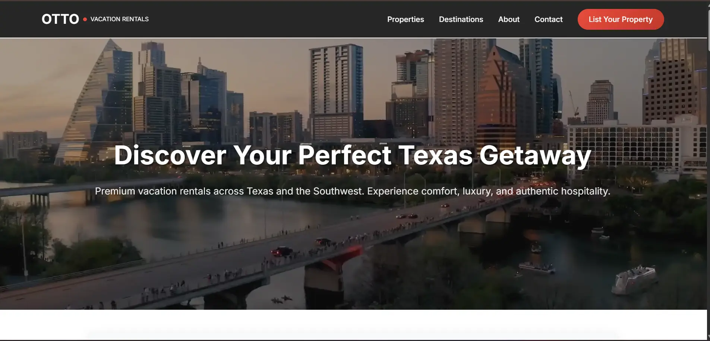

ARCHIVES_WEB.DEVELOPMENT
// Scalable front & back end systems
IMPERIAL FLY
// Plataforma de vuelos Business Class exclusivos
🔵 El reto: Cliente del sector aeronáutico necesitaba una presencia digital premium para vender vuelos Business Class a precios accesibles, integrando ofertas dinámicas por tiempo limitado y captación de leads desde Facebook Ads.
✅ Resultado: Sitio web con página VIP de ofertas con countdown dinámico, landing page externa con formulario multi-step y 108 visitantes en los primeros 30 días.

THE BIG & TALL — E-COMMERCE SHOPIFY USA
// Moda en tallas grandes para mercado americano
🔵 El reto: Cliente americano necesitaba una tienda Shopify premium para hombres de talla grande (XL-6XL), con catálogo de 25 productos, 4 colecciones, búsqueda predictiva y experiencia de compra optimizada en USD.
✅ Resultado: Tienda en producción con carrusel hero, guía de tallas interactiva, filtrado por precio y disponibilidad, FAQ accordion y checkout con PayPal integrado.

Kings League Relojes — E-commerce Shopify
🔍 El reto: Kings League Americas necesitaba una tienda oficial de smartwatches con branding de liga, carrusel de equipos, colecciones por serie y checkout optimizado para fans LATAM.
✅ Resultado: Tienda en producción con 10 productos, 3 series de colección, reseñas verificadas, búsqueda predictiva y 25% mejora en velocidad de carga.

Otto Vacation Rentals
🔍 El reto: La clienta necesitaba una presencia digital profesional para competir con Airbnb y VRBO en Texas, sin frameworks ni costos de hosting.
✅ Resultado: Landing page en producción con filtrado dinámico, scroll animations, formulario validado y deploy automático vía GitHub Pages.
CRM WhatsApp Business
🔍 El reto: Gestionar cientos de clientes simultáneos vía WhatsApp sin perder contexto ni historial de conversaciones.
✅ Resultado: CRM en tiempo real con autenticación QR, chat multimedia y sincronización instantánea de mensajes.